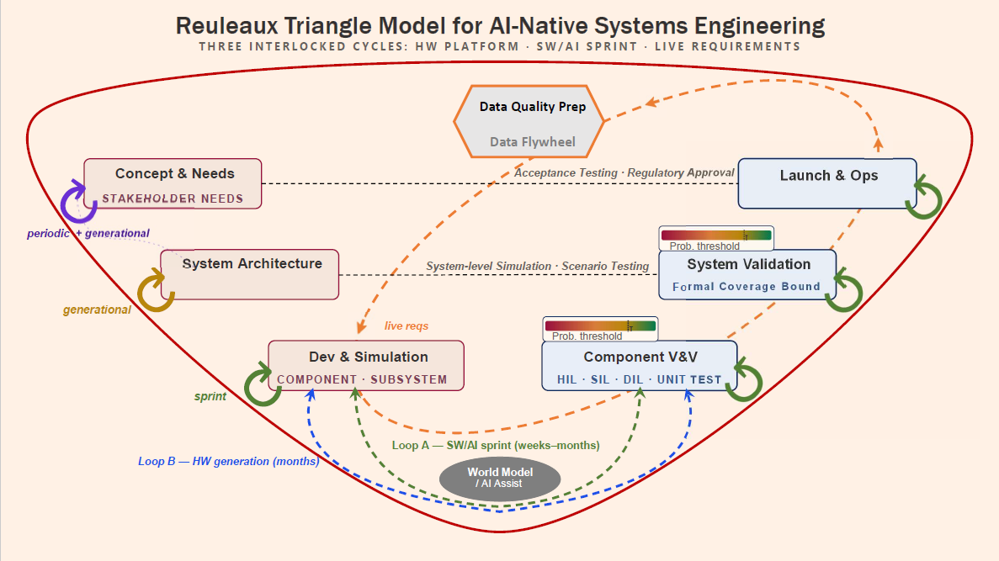

Working tools at the seam of regulation and autonomy.
I'm Neel Shah — a product leader executing safety-critical hardware, software, and autonomy systems. These are live tools I built to make regulation and safety data across automotive, autonomous vehicles, and robotics genuinely usable — at a moment when AI is reshaping these disciplines and forcing all of us to question our sources. Each tool draws only on official public sources, cites them, and keeps itself current.
Auto Reg Advisor
Ask any automotive regulation question worldwide — answered live from official government sources (NHTSA, EU, UNECE, UK, Japan, India) with citations, never invented.
Open toolAV Safety Tracker
A live dashboard of NHTSA Standing General Order ADS crash reports plus California DMV disengagement rates — filter, sort, and explore the public autonomous-vehicle safety record.
Open toolAV & Robotics Standards Radar
A monitoring feed that watches official regulation and standards sources across AV, robotics, functional safety, AI governance, and drones — and flags when they change.
Open toolWhy I build these
Electro-mechanical systems research, systems engineering, software development, and large-program management taught me one thing: a shipped, safe system lives or dies on regulatory compliance. Shaping safety proactively — while Physical AI advances at lightning pace — isn't just responsible; it's the better business model. I focus on that gap in autonomy and robotics, turning hardware-software integration into products people can actually use and trust.
These tools are that thesis, working in public. If you're building in autonomy, AV safety, or safety-critical systems — and any of this is useful, or worth a conversation — I'd love to hear from you.
 Trace.Space · Fireside chat
What AI Actually Means for Systems Engineering
A practitioner conversation with Trace.Space's Janis Vavere — what's genuinely shifting, what's oversold, and why requirements remain the most underused control point in modern engineering.
Watch the conversation
Trace.Space · Fireside chat
What AI Actually Means for Systems Engineering
A practitioner conversation with Trace.Space's Janis Vavere — what's genuinely shifting, what's oversold, and why requirements remain the most underused control point in modern engineering.
Watch the conversation

Trace.Space · Blog Field notes on engineering & requirements Writing on systems engineering, requirements, and building safety-critical products — from the Trace.Space team and contributors. Read the blog LinkedIn Notes on autonomy, safety & building in public Shorter, more frequent thinking — posted as I build these tools and work through the regulation-meets-autonomy problem. See recent posts